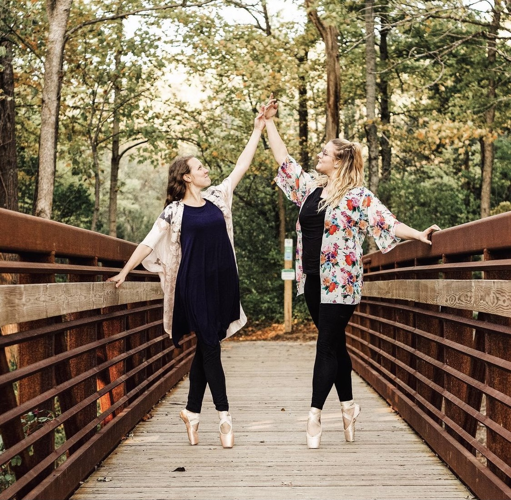
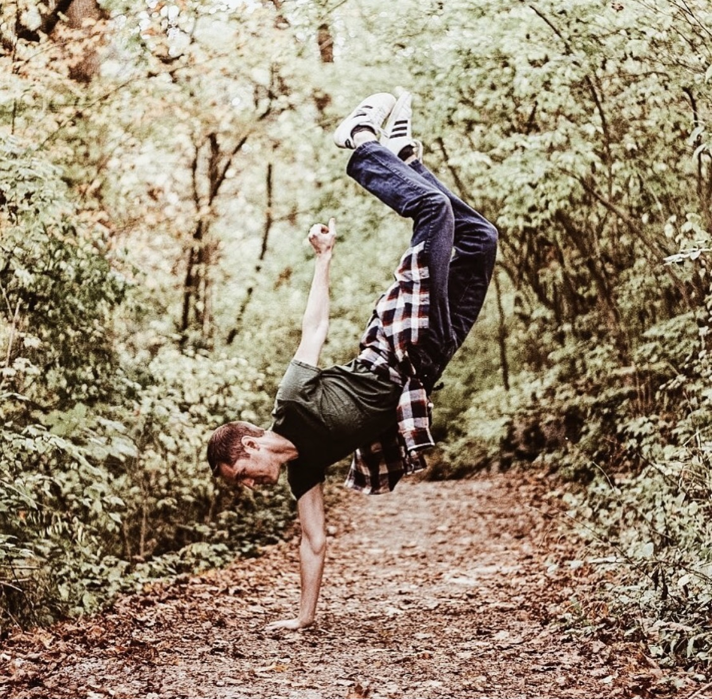

Ayo is Cedarville University's artistic dance company!
We involve dancers of all styles, skills, and backgrounds in movement, collaboration and art. "Ayo" ("EYE-OH") is a Yoruba word meaning "joy!" Dance is a celebration! Our goal is to glorify God through dance.
Our verse is Jeremiah 31:13 which says, "Then young women will dance and be glad, young men and old as well. I will turn their mourning into gladness; I will give them comfort and joy instead of sorrow."
Want to learn more about worshipping through dance? Click the button!
Learn More-
Ballet
Ballet is just one of the many dance styles we showcase in our organization. Whether you have a perfect pirouette or don't know what one is, we encourage everyone from pros to beginners to try out this timeless classic!
-
Swing

Swing dances are just as fun for the audience as they are for the dancers. If you're looking for a thrill and you're up for the challenge, this is the perfect partner dance to audition for.
-
Hip-Hop
Hip-hop dance is a fusion dance genre that incorporates elements of popping, locking, breaking, jazz, ballet, tap dancing and other styles. This style will let you tap into your edgey side!
-
Tap
Our tap dances really get the crowd into the rhythm! This style can get a bit technical with all the toe-tapping, but it's definitely worth the practice and it's always a hit. We offer dnaces for both seasonaed tappers and novices.
Organization Opportunities…
At the end of every semester Ayo puts on a showcase for our dancers and choreographers to show off what they've put together. This event welcomes all friends and family to join and watch as each dance is performed by our members! If you're on the fence about joining, just attend one of our showcases to get a good idea of what it means to be a part of the organization. Attending our showcases is a great way to support our dancers and experience the performing arts. With the variety of talent in all the different dance styles, we promise you won't be disappointed!
Ways to be involved:
-
Sign up for dances and participate as a dancer. You can sign up for as many or as little number of dances as you want. Each dance will have one hour-long practice a week, and attendance to these classes are mandatory.
-
If you have a dance background and are passionate about choreographing, try teaching one of your own dances. You will get to write and teach a dance to a class. The song and costumes that go with it are up to you as well!
-
Don't want to teach a class, but also want to choreograph with friends? We have duet and small group auditions for that! Find a friend or two and get a little more technical with your moves to show off your skill.
-
If it's been your dream to solo, start planning now! Audition for a solo of your chosen dance style and have the stage all to yourself as we cheer you on! This is a great was to showcase your individual talent, skill, and style.
Some other dance styles that we've had through the years include lyrical, contemporary, jazz, salsa, pointe, irish step, 70s, 80s, 90s throwback, and more. If you have experience in any other style of dance and want to bring it to Ayo, we would love for you to choreograph and share with us. We're always eager to have fun learning something new.